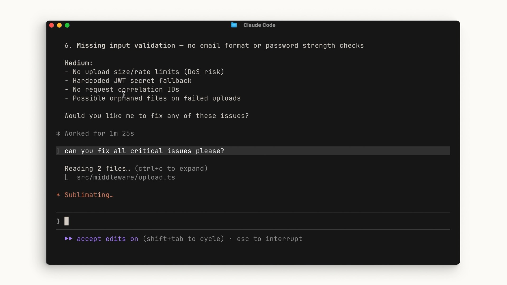
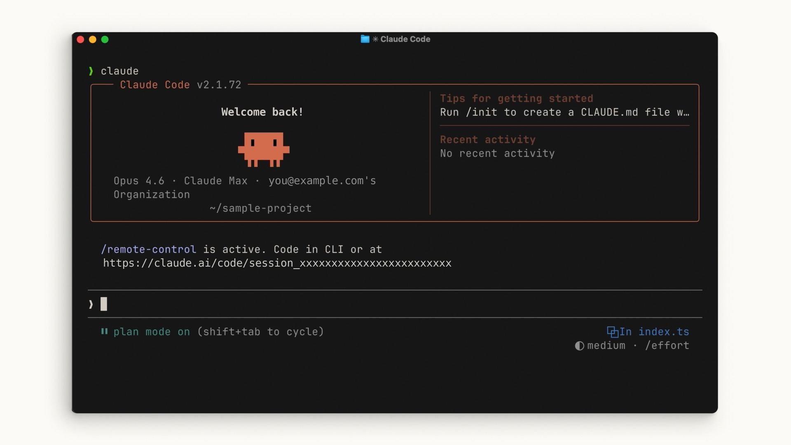
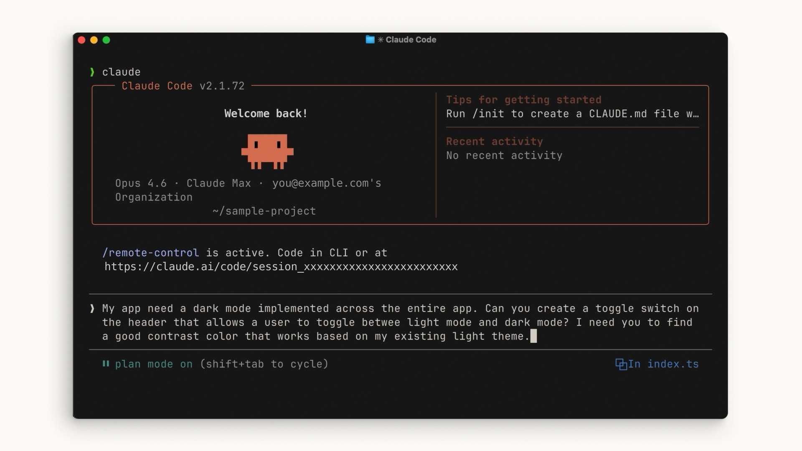

Первый промпт
Чему научитесь
Видео 2:27 и текст урока
К концу урока вы сможете:
- выбрать режим разрешений — Manual, Auto-accept или Auto — и переключать режимы клавишами
Shift + Tab; - объяснить, что делает plan mode и для каких задач он подходит;
- проверить план перед тем, как принять его, и поправить Claude, если он что-то упустил.
Видео и текст урока.
С Claude Code разговаривают так же, как с любым ИИ-ассистентом. Но когда вы вводите промпт, стоит учесть несколько вещей: они и защитят вас, и упростят работу.
Выбор режима разрешений
Вы сами решаете, насколько плотно присматривать за Claude, пока он работает. Режимы переключаются по кругу клавишами Shift + Tab.
- Режим Manual: Claude спрашивает разрешения каждый раз, когда хочет изменить файл или выполнить команду.
- Режим Auto-accept: правки файлов и типовые команды для работы с файловой системой, такие как
mkdir,mvиrm, одобряются автоматически, но на остальные команды по-прежнему нужно ваше разрешение. - Режим Auto: Claude работает без рутинных запросов разрешения, а система безопасности в фоне проверяет большинство действий; если что-то заблокировано, Claude обычно находит более безопасный путь или спрашивает вашего согласия.
Правильного или неправильного выбора здесь нет — выбирайте то, что вам удобнее.

accept edits on) читает файлы и работает над задачей.Plan mode — режим планирования
В том же круге Shift + Tab есть plan mode. В этом режиме Claude берёт ваш промпт, читает файлы и запускает shell-команды, чтобы разобраться в кодовой базе и продумать предложенную вами реализацию, но исходные файлы не меняет. По ходу он задаёт уточняющие вопросы, а в конце выдаёт подробный план, который может сам и выполнить.
Plan mode отлично подходит, чтобы спланировать сложные изменения или безопасно провести ревью кода. Вы часто будете просить Claude реализовать функциональность в несколько шагов — и как раз здесь plan mode особенно силён.

plan mode on.Пример: добавляем переключатель тёмной темы
Разберём пример. Допустим, вашему приложению нужен переключатель тёмной темы. Откройте корневую папку проекта и запустите claude. Нажимайте Shift + Tab, пока в строке состояния не появится plan mode on, а затем напишите промпт вроде такого:
My app needs a dark mode implemented across the entire app. Can you create a toggle switch on the header that allows a user to toggle between light mode and dark mode? I need you to find a good contrast color that works based on my existing light theme.

Дайте Claude составить план. Просмотрите его и, если он вас устраивает, примите — пусть Claude его выполняет. В зависимости от режима разрешений он может по ходу сверяться с вами. В конце видно, что именно сделал Claude и как он пришёл к своим выводам.
Попробуйте сами
Откройте проект, который хорошо знаете, и запустите claude. Нажимайте Shift + Tab, пока в строке состояния не появится plan mode on, и попросите внести одно небольшое изменение, которое вы и так собирались сделать. Прежде чем принять план, проверьте его: названы ли в нём те файлы, которых вы ожидали? Если нет, скажите Claude, что он упустил, и прочитайте новый план.
Итог
Работая с Claude Code, старайтесь описывать задачу в промпте как можно подробнее. Если хотите участвовать в каждом шаге, такая возможность есть. Пользуйтесь plan mode, чтобы Claude, прежде чем браться за код, вник в детали того, чего вы хотите добиться.
Дальше
Следующий урок — «Цикл Explore → Plan → Code → Commit»: главный рабочий процесс курса, в котором Claude сначала изучает код и составляет план, а уже потом пишет код и делает коммит.
Оригинал урока: Your first prompt.